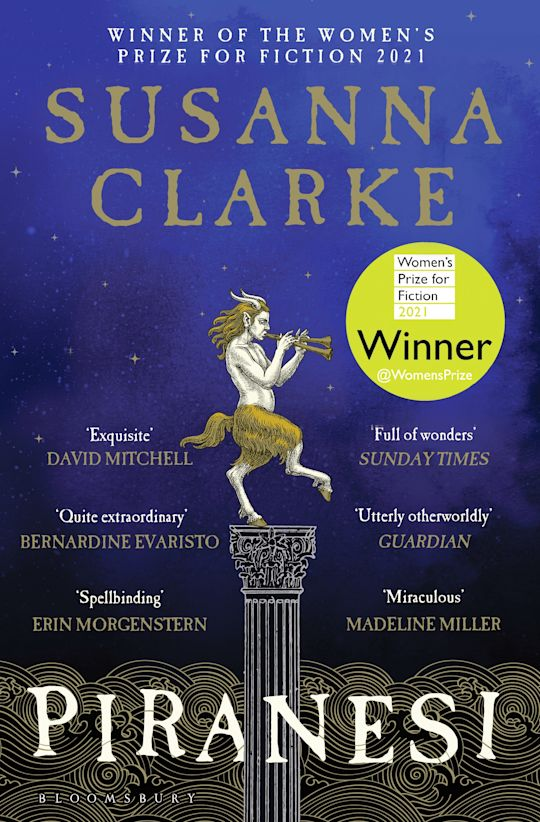

"The Beauty of the House is immeasurable; its Kindness infinite."
Susanna Clarke crafts a breathtakingly original, dreamlike fantasy set inside a boundless labyrinth known as the House. Filled with thousands of statues, echoing halls, and an ocean that rushes through the lower corridors, the House is the entire world to Piranesi, its gentle and observant inhabitant who records its tides, wonders, and mysteries with innocent awe.
As Piranesi’s journals unfold, a darker reality emerges concerning the only other living person in the House, leading to a suspenseful and deeply moving mystery of identity, cruelty, and reclamation. Clarke’s prose is luminous, peaceful, and entirely spellbinding from start to finish.
A sublime, exquisitely tender triumph of speculative fiction that feels like stepping into another dimension.